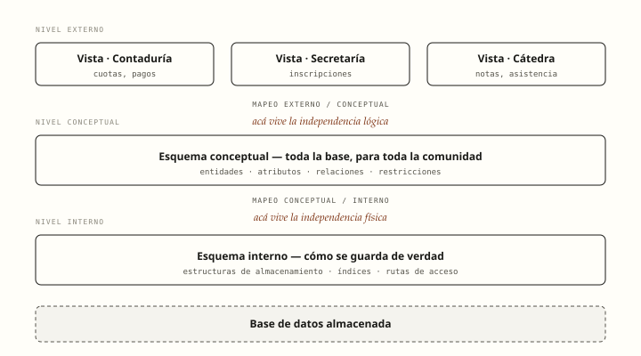

Lección 03 · Unidad 1 · Sistemas de Gestión de Base de Datos
Los tres niveles y la independencia de datos
La arquitectura de tres esquemas existe por una sola razón: para que puedas cambiar una capa sin romper la de arriba. Eso es toda la idea.
01Abstracción: qué se oculta en cada nivel
La Clase 2 lo define bien: abstraer es "la supresión de detalles de la organización, dejando de lado detalles no relevantes". La pregunta es irrelevantes para quién, y por eso hay tres niveles y no uno.

| Nivel | Su esquema describe | Le oculta al de arriba |
|---|---|---|
| Interno | La estructura de almacenamiento físico: rutas de acceso, índices, formato en disco. | — |
| Conceptual | Toda la base para la comunidad de usuarios: entidades, tipos de datos, relaciones, restricciones. | Cómo y dónde se guarda. |
| Externo (o de vistas) | La parte que le interesa a un grupo de usuarios. | El resto de la base entera. |
Los tres esquemas son sólo descripciones. Los datos que existen de verdad están únicamente en el nivel físico. Cuando un usuario pide algo contra su vista, el DBMS traduce esa solicitud a una contra el esquema conceptual, y ésa a una contra el interno. Esas traducciones se llaman mapeos, y son las flechas invisibles del dibujo.
02Independencia de datos: la definición exacta
La independencia de datos es "la capacidad de cambiar el esquema en un nivel de un sistema de bases de datos sin tener que cambiar el esquema en el siguiente nivel más alto".
Esa única frase se parte en dos, según qué frontera cruces:
| Independencia lógica | Independencia física | |
|---|---|---|
| Cambiás… | el esquema conceptual | el esquema interno |
| …sin tocar | los esquemas externos ni las aplicaciones | el esquema conceptual |
| Ejemplo | Agregar la columna email a Estudiante. La vista de Contaduría, que nunca la nombra, no se entera. |
Crear un índice para acelerar las búsquedas por año. La consulta se escribe igual; sólo corre más rápido. |
| ¿Se logra? | Muy difícil. | Casi siempre sí. |
Elmasri dice algo que suena al revés de lo intuitivo, y por eso se pregunta:
la independencia física de datos existe en la mayoría de las bases de datos
,
mientras que la independencia lógica de datos es muy difícil de conseguir
.
¿Por qué? Porque ocultar dónde está un dato en el disco es fácil — a nadie le importaba. Pero permitir que cambie qué datos hay y con qué restricciones, sin tocar ni una línea de las aplicaciones que los usan, es un requisito mucho más estricto. La lógica toca el significado; la física, sólo la mecánica.
Un detalle honesto que conviene saber: Elmasri aclara que pocos DBMS implementan la arquitectura completa, porque los dos niveles de mapeo cuestan tiempo de ejecución. Es un modelo para pensar y diseñar, no una foto de cómo está construido Oracle.
03Práctica
El DBA crea un índice sobre Estudiante.Año para acelerar un reporte.
¿Qué esquema cambió?
Se agrega el atributo Prepaga a Paciente. La vista de Facturación, que
nunca lo menciona, sigue funcionando sin cambios. ¿Qué se demostró?
De los tres esquemas, ¿en cuál están guardados los datos reales?
Elmasri & Navathe, 5ª ed. — sección 2.2 "Arquitectura de tres esquemas e
independencia de los datos", páginas 31 a 33
(páginas 57 a 59 del PDF en raw/). La Figura 2.2 es el dibujo original.
Soy tu profe acá. Si te cuesta separar lógica de física, tirame un cambio cualquiera y te digo de cuál se trata y por qué — es la mejor forma de fijarlo.